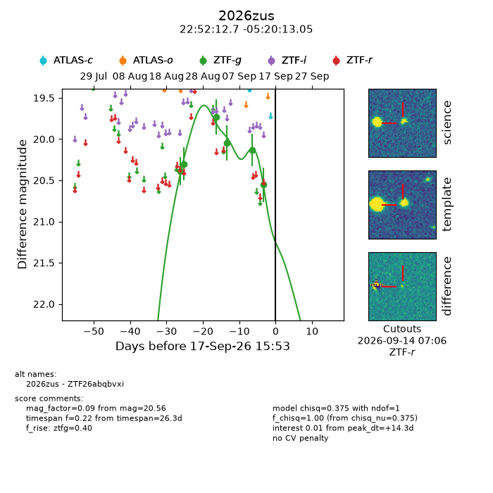
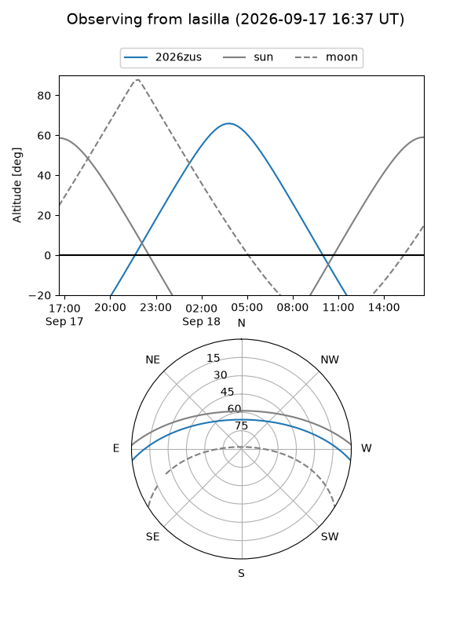
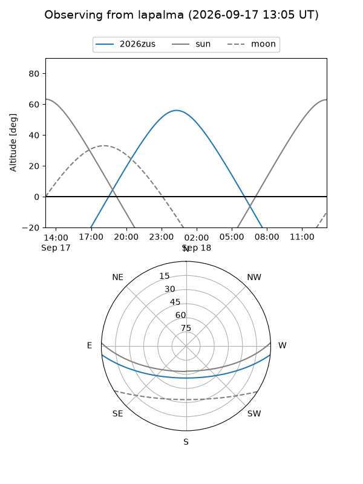
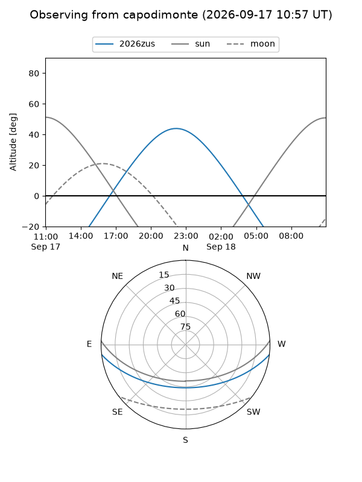
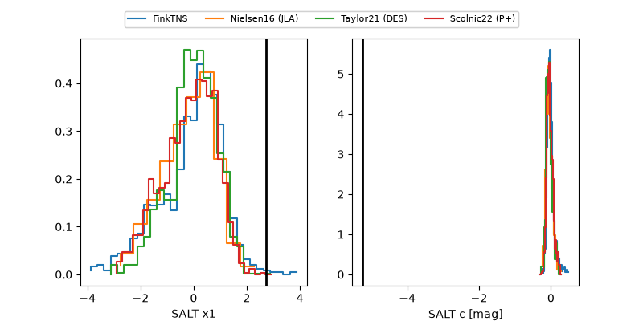

2026zus
Target 2026zus at 2026-09-17 15:55
Aliases and brokers:
FINK-ZTF: ztf.fink-portal.org/ZTF26abqbvxi
Lasair-ZTF: lasair-ztf.lsst.ac.uk/objects/ZTF26abqbvxi
ALeRCE-ZTF: alerce.online/object/ZTF26abqbvxi
YSE-PZ: ziggy.ucolick.org/yse/transient_detail/2026zus
TNS name: wis-tns.org/object/2026zus
Direct TNS query: direct search
alt names
ZTF26abqbvxi (ztf,fink_ztf)
2026zus (tns,yse)
Coordinates:
equatorial (ra, dec) = 343.0530,-5.33696
equatorial (HMS+DMS) = 22:52:12.72,-05:20:13.05
galactic (l, b) = (65.0905,-54.22466)
Flags:
TNS type: nan
peak dt: +14.3
Photometry:
last ztfg=20.56
6 ztfg detections
Lightcurve

Visibility



Additional plots
